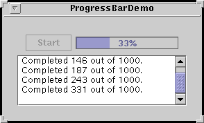

Feedback Form
|
|
Start of Tutorial > Start of Trail > Start of Lesson |
Search
Feedback Form |
TheTimerclass fires one or more action events after a specified delay. You can use a timer in either of two ways:
Note that the timer's task is performed in the event-dispatching thread. This means that the task can safely manipulate components, but it also means that the task should execute quickly. If the task might take a while to execute, then consider using a
- To perform a task once, after a delay.
For example, the tool tip manager uses timers to determine when to show a tool tip and when to hide it.- To perform a task repeatedly.
For example, you might perform animation or update a component that displays progress toward a goal. See Creating an Animation Loop with Timerfor an example and discussion of using a timer for animation.
SwingWorkerinstead of or in addition to the timer. See How to Use Threads for instructions about using theSwingWorkerclass and information on using Swing components in multi-threaded programs.Let's look at an example of using a timer to periodically update a component that displays progress toward a goal. Here's a picture of an application that uses a timer and a progress bar to display the progress of a long-running task.
 Here's the code from
Try this:
- Compile and run the application. The main source file is
ProgressBarDemo.java. You will also need two other source files.
See Getting Started with Swing if you need help compiling or running this application.- Push the Start button. Watch the progress bar as the task makes progress.
ProgressBarDemo.javaWhen the user presses the Start button, the program starts the timer:public final static int ONE_SECOND = 1000; ... timer = new Timer(ONE_SECOND, new ActionListener() { public void actionPerformed(ActionEvent evt) { //...Perform a task... } });When the task is finished, the timer's action listener stops the timer:timer.start();if (/* task is done */) { ... timer.stop(); ... }
The following tables list the commonly usedTimerconstructors and methods. The API for using timers falls into two categories:
Creating and Initializing the Timer Method or Constructor Purpose Timer(int, ActionListener)Create a timer. The intargument specifies the number of milliseconds to pause between action events. UsesetDelayto change the delay after construction. The second argument is an action listener, which the constructor registers with the timer. You can also register action listeners withaddActionListenerand remove them withremoveActionlistener.void setDelay(int)
int getDelay()Set or get the number of milliseconds between action events. void setInitialDelay(int)
int getInitialDelay()Set or get the number of milliseconds to wait before firing the first action event. By default the initial delay is equal to the regular delay. void setRepeats(boolean)
boolean isRepeats()Set or get whether the timer repeats. By default this value is true. Call setRepeats(false)to set up a timer that fires a single action event and then stops.void setCoalesce(boolean)
boolean isCoalesce()Set or get whether the timer coalesces multiple, pending action events into a single action event. By default this value is true.
Running the Timer Method Purpose void start()
void restart()Turn the timer on. restartalso cancels any pending action events.void stop()Turn the timer off. boolean isRunning()Get whether the timer is running.
This table shows the examples that useTimerand where those examples are described.
Example Where Described Notes ProgressBarDemoThis section and
How to Monitor ProgressUses a timer to show periodic progress. AnimatorApplicationTimerand
AnimatorAppletTimerCreating an Animation Loop with Timer Uses a timer to control an animation loop. SliderDemoHow to Use Sliders Another animation program that uses a timer. Allows the user to change the timer's delay dynamically. Also shows how to use the initial delay and restartto create a longer pause in an animation between certain frames.
|
|
Start of Tutorial > Start of Trail > Start of Lesson |
Search
Feedback Form |